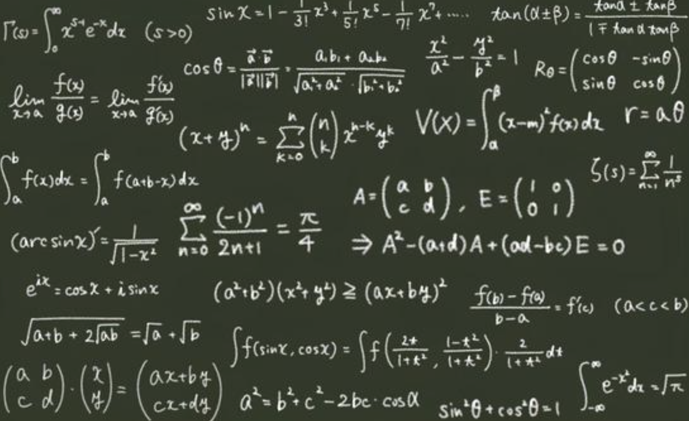
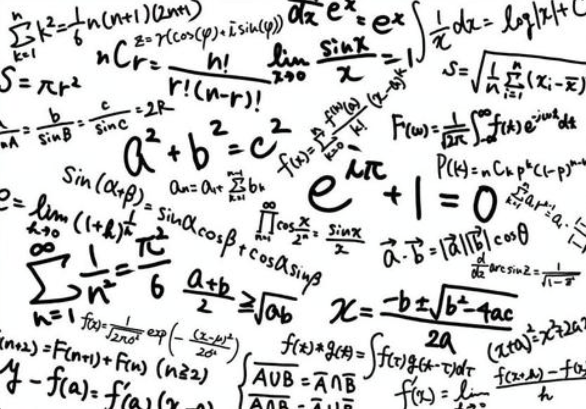
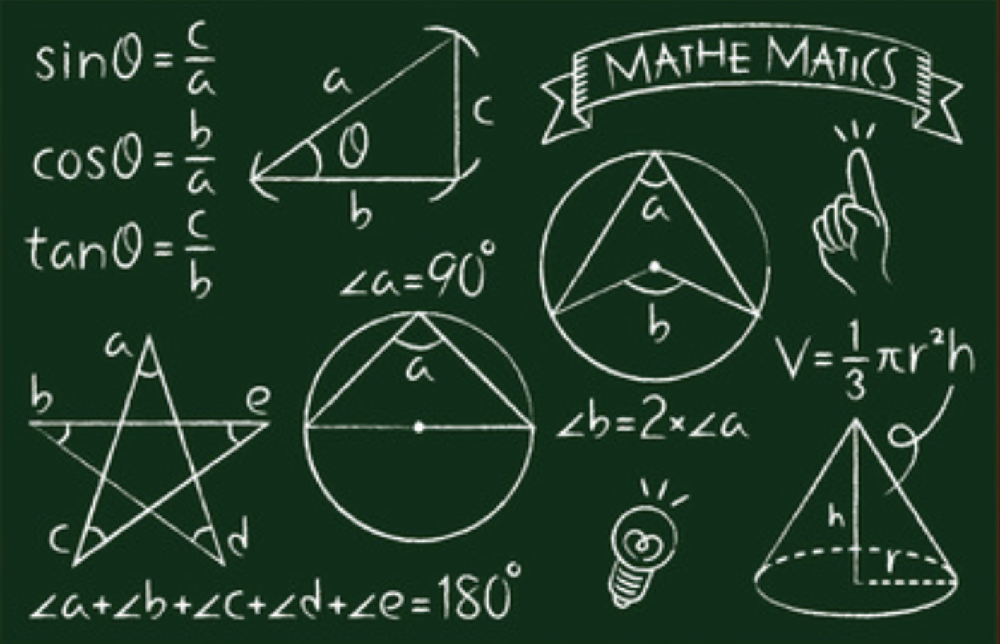
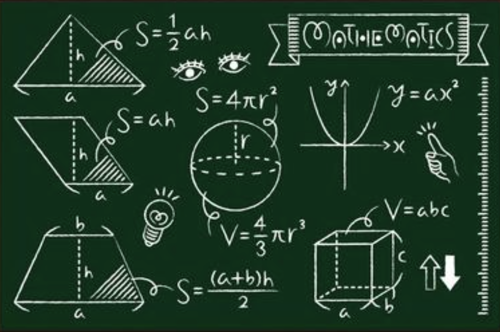
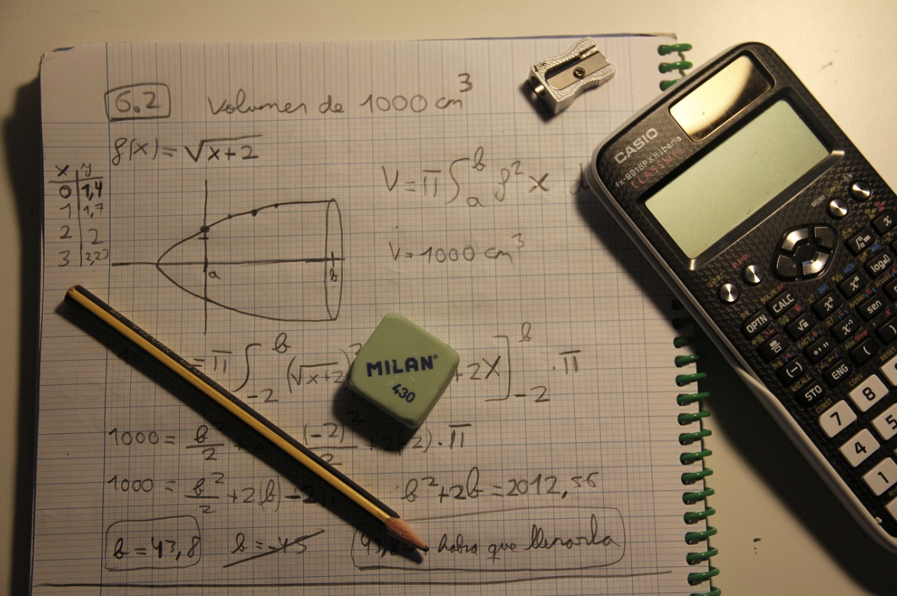

期刊論文
- 2023年4月
國中數學史數位閱讀文本之開發初探。臺灣數學教育期刊
- 쑤이원. (2023)
서평: 잉지아밍, 동아시아 전통 과학: 한일 수학 문화사 (타이중: 창하이도서, 2022). 176쪽. [英家銘, 東亞傳統科學: 日韓數學文化史 (台中: 滄海圖書, 2022)]
- 2022年12月
數學通識課程之開發原則初探。臺北市立大學通識學報
- 2022年9月
「雞兔同籠」數學史學習工作單編製探討。HPM通訊
- 2022年6月
蘇意雯、宋致論。從敷衍數學到成為程式語言的先驅 世上首位程式設計師勒芙蕾絲。科學月刊

專書篇章
- 2019年3月
從一元美金談起。載於通識在線雜誌社，科學通識20講 (151-162頁)
- 2018, April
Su, Yi-Wen. Integrating Reading into Math Teaching. In T. Sibbald （Ed.）. Teaching Interdisciplinary Mathematics, pp. 29-40. Champaign, IL : Common Ground Research Networks.
- 2016年9月
楊凱琳、吳昭榮、鄭英豪、蘇意雯、林國源、洪介興、吳明柱。正視學生數學學習的落差與找尋公平學習機會的出路。載於劉吉軒（主編），帶起每個孩子國民教育大進擊（3-14頁）。臺北市：政大創新與創造力研究中心。
- 2015年8月
蘇意雯、陳政宏。數學通識課程的創意作業分享。收錄自臺北市立大學多元升等制度建立大專教師教學品牌學術研討會論文集（pp. 97-109）。臺北市：臺北市立大學

研討會論文
Aenean ornare velit lacus, ac varius enim lorem ullamcorper dolore. Proin aliquam facilisis ante interdum. Sed nulla amet lorem feugiat tempus aliquam.

研究計畫
Aenean ornare velit lacus, ac varius enim lorem ullamcorper dolore. Proin aliquam facilisis ante interdum. Sed nulla amet lorem feugiat tempus aliquam.
教育部計畫
Aenean ornare velit lacus, ac varius enim lorem ullamcorper dolore. Proin aliquam facilisis ante interdum. Sed nulla amet lorem feugiat tempus aliquam.

獲獎狀況
Aenean ornare velit lacus, ac varius enim lorem ullamcorper dolore. Proin aliquam facilisis ante interdum. Sed nulla amet lorem feugiat tempus aliquam.